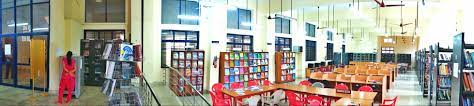

1 / 3
2 / 3

3 / 3

Department Facilities
The Department of Information Technology has a video conferencing facility, a central server room and Seven laboratories. The department has the necessary software and hardware infrastructure for the conduct of all the 10 laboratory/practical subjects in the B.Tech and M.Tech curriculum. All the student projects are done in-house. Each laboratory room has networked printers over Ethernet LAN. Although the emphasis is on the use of Linux and open source software, other popular proprietary software platforms are also supported. In addition,the department provides the necessary technical support for the smooth functioning of the campus-wide network in the college. A 100Mbps internet connection via firewall provided to the entire campus through fibre optic links. Also have 10 Mbps NMEICT connection and 10 Mbps Leased line connections.
The IT department is managing the entire campus network including Administrative office, Library, and other departments and sections in the campus. More over the computer laboratories are under the IT department are also functioning as the option facilitation centre during the time of the Centralized Allotment process (CAP) of the Commissioner for Entrance Examinations. In additions to these, Biometric Punching, WIFI management, Website management, DDFS, Conducting Online Exams/Training programmes for CGPU,Govt.(ASAP/NASSCOM) and other organizations (Online banking recruitments) etc. are handled by the IT Department..
A robust and dynamic library is vital to the academic life of the students as well as the Faculty. The library provides an environment for discovery, reflection, and expansion of knowledge. The department library serves as a central organ of academic activity in the IT Department. The Department has a rich & vast collection of more than 300 books, periodicals and reports. It also has one copy each of all B.Tech. Projects and M.Tech.Thesis work carried out in the department in recent years. The library serves to provide a calm and cosy ambience conductive to long hours of study. The library opens on all working days of the Institute from 9 AM to 4:00 PM.
This lab runs on thin-client machines running under EnterpriseLinux as wellas desktops running under Windows. 36terminals areprovided forInternetconnectivityand running various software labsinthecurriculum.
This lab has 8 Cisco routers,switches,high- speed modems and 36 dual-boot desktop machines. A wireless LAN laboratory with wireless access points/routers,wireless site survey kit and other equipmentset up here.
This lab has 15 desktops with Windows 8 Professional, Intel Core i5 Processors with internet connectivity. The Functional Testing software (QTP) hasbeenset uphere.